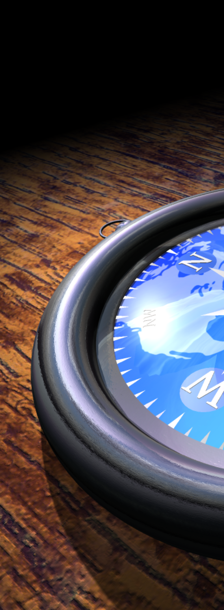
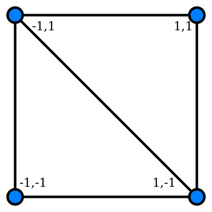
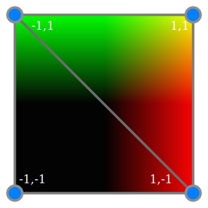

Felix Palmer | @pheeelicks | www.pheelicks.com
Felix Palmer | @pheeelicks | www.pheelicks.com
Slides: felixpalmer.github.io/safari-webgl/presentation.html
Code: github.com/felixpalmer/safari-webgl
Slides: felixpalmer.github.io/safari-webgl/presentation.html
Some examples: http://threejs.org
var geom = new THREE.PlaneGeometry( 600, 600 );
var material = new THREE.MeshBasicMaterial();
var mesh = new THREE.Mesh( geom, material );
scene.add( mesh );
var camera = new THREE.PerspectiveCamera( 70 );
scene.add( camera );
var renderer = new THREE.WebGLRenderer();
new THREE.SphereGeometry( 1, 32, 32 );
new THREE.TorusGeometry( 1.3, 0.1, 16, 32 );
var flatRingRadius = 3.33;
var flatRingPoints = [
new THREE.Vector3( flatRingRadius + 0.1, 0, 0 ),
new THREE.Vector3( flatRingRadius - 0.1, 0, 0 )
];
var flatRing = new THREE.LatheGeometry( flatRingPoints, 64 );
var path = new THREE.Path();
ringPath.moveTo( 0, 0 );
ringPath.lineTo( 1, 0 );
ringPath.absarc( 1, 0, 1, 0, Math.PI, true )
...
var points = ringPath.getPoints( 24, true );
var ring = new THREE.LatheGeometry( vectors, 128 );
new THREE.TextGeometry( "E", { size: 2, height: 0.04 } );
wire = new THREE.MeshBasicMaterial( { wireframe: true } )
basic = new THREE.MeshBasicMaterial( { color: "#00ff00" } )
new THREE.MeshPhongMaterial( {
color: new THREE.Color( "#1557fb" ),
emissive: new THREE.Color( "#232323" ),
specular: new THREE.Color( "#ccccff" ),
shininess: 40
} );
new THREE.MeshStandardMaterial( {
color: new THREE.Color( "#1557fb" ),
emissive: new THREE.Color( "#232323" ),
metalness: 1.0,
roughness: 0.6
} );
new THREE.MeshPhongMaterial( {
map: texture.wood,
...
} ),
new THREE.MeshPhongMaterial( {
envMap: texture.sky,
...
} ),
new THREE.MeshPhongMaterial( {
bumpMap: texture.brushed,
bumpScale: 0.003,
...
} ),
new THREE.MeshPhongMaterial( {
transparent: true,
opacity: 0.95,
blending: THREE.AdditiveBlending,
combine: THREE.MixOperation,
envMap: texture.sky,
reflectivity: 0.29,
...
var light = new THREE.SpotLight( 0xffffff, 1, 0 );
light.position.set( 25, -20, 20 );
light.target.position.set( 0, 0, 0 );
light.castShadow = true;
requestAnimationFrame rather than setTimeoutapp.tick = function() {
app.render();
window.requestAnimationFrame( app.tick );
}
app.tick();
app.clock = new THREE.Clock( true );
app.render = function() {
var t = 0.2 * app.clock.getElapsedTime();
var r = 15.0 + 12.0 * Math.cos( 0.3 * t );
camera.position = new THREE.Vector3( 0, 0, r );
...
app.render = function() {
...
camera.position = camPosition;
camera.up = new THREE.Vector3( 0, 0, 1 );
camera.lookAt( new THREE.Vector3( 1, 2, 3 ) );
};
var r = 15.0 + 12.0 * Math.cos( 0.3 * t );
camera.position = new THREE.Vector3(
r * Math.sin( t ), // Orbital motion
r * Math.cos( t ), // Orbital motion
12.0 + 5.0 * Math.cos( 1.3 * t ) // Height
);
attribute vec2 aCoordinate;
varying vec2 vCoordinate;
void main() {
vCoordinate = aCoordinate;
gl_Position = vec4( aCoordinate, 0, 1 );
}

varying vec2 vCoordinate;
void main() {
gl_FragColor = vec4( vCoordinate, 0.0, 1.0 );
}

uniform global informationvarying flow from vertex to fragment shader, interpolatedattribute per vertex informationFelix Palmer | @pheeelicks | www.pheelicks.com
Slides: felixpalmer.github.io/safari-webgl/presentation.html
Code: github.com/felixpalmer/safari-webgl